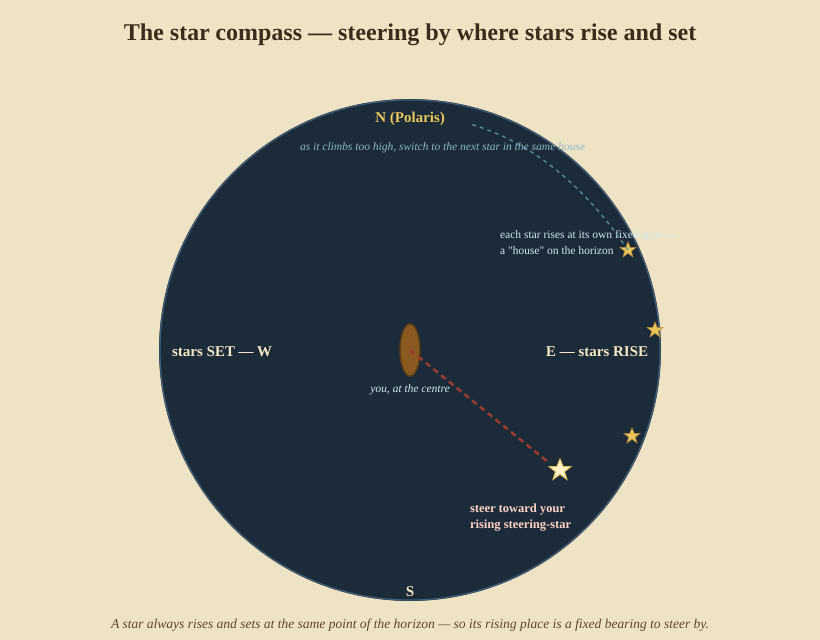
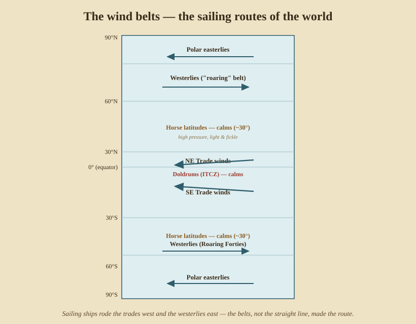

Natural Navigation
Long before the sextant, the almanac, or even the compass, people crossed open oceans and found tiny islands with none of it. They read the sky, the sea, the wind, and the life of the ocean directly. This is not a lesser craft — the Pacific was settled, island by island over thousands of miles, entirely by it — and it is the navigation that still works when every instrument has failed. Part VII is the skill of reading the world without a single dial.
25. The star compass and star paths
The stars do the compass’s job if you know them. A star always rises at the same point of the eastern horizon and sets at the same point in the west (for your latitude, slowly shifting over the year). So the rising place of a known star is a fixed direction — a bearing you can steer by.

The horizon is divided into named houses — the points where particular stars rise and set. You steer for the star sitting low in the house that lies on your course; as it climbs too high to be a good mark, you switch to the next star that rises in the same house behind it, following a star path across the whole night. Polaris (or the Southern Cross, Part II) anchors the north–south line; the rising and setting stars box the rest of the compass.
By day the same idea uses the Sun: its rising and setting bearings, and its arc, give direction (and, held against the swell, a way to keep a heading when the Sun itself is too high to steer by).
Who & when. This is the living tradition of the Pacific voyagers — Polynesian, Micronesian, and Melanesian navigators who settled the ocean over millennia. The knowledge was nearly lost, then carried into the modern era by masters like Mau Piailug of Satawal, who navigated the reconstructed canoe Hōkūleʻa from Hawaiʻi to Tahiti in 1976 with no instruments — proving the methods that the explorer-scholar David Lewis had documented at sea.
26. Steering by swell, wind, and the feel of the sea
A star sets; a cloud covers the Sun; you must still hold your course. The ocean itself keeps direction:
- Swell. Large ocean swells are generated by distant, steady wind systems and run in consistent directions for days, far from the local wind. A navigator learns the dominant swell and holds a constant angle of the canoe to the swell — felt through the hull as much as seen — to keep a heading through a starless hour. Skill lies in reading several swell trains at once and not confusing the local wind-chop for the true, deep swell.
- Wind. The prevailing wind of a region (the trades especially — §27) is a reliable reference for hours or days; steer a set angle to it, and cross-check against sky and swell whenever they show.
27. The wind belts — the ocean’s highways
Zoom out from steering to routing, and the planet’s winds fall into steady belts that decided every sailing route in history:

- Doldrums (the ITCZ) straddle the equator — hot, calm, squally; to be crossed, not sailed in.
- Trade winds blow steadily toward the equator from the east — northeast in the northern tropics, southeast in the south — the engine of every westbound crossing.
- Horse latitudes near 30° N and S — high pressure, light and fickle airs.
- Westerlies in the mid-latitudes (40°–60°) blow, hard and reliably, from the west — the eastbound return road (the “Roaring Forties” of the south).
- Polar easterlies at the highest latitudes.
Sailing ships did not go in straight lines; they rode the belts — down into the trades to run west, up into the westerlies to come home — which is why routes curved across the whole ocean. Knowing the belts was knowing the way.
28. Signs of land — reading a landfall before you see it
The hardest part of an ocean passage is the end: finding a low island in a great sea. Nature widens the target for miles around land, and the navigator learns to read the signs:
- Birds. Land-based seabirds (boobies, terns, noddies) fly out to fish by day and back to the island at dusk — so their evening flight direction points at land, often from 20–30 miles out.
- Clouds. A stationary cloud standing while others drift, or a cloud with a greenish underside (lagoon loom, light reflected off shallow water) marks an island below the horizon.
- Swell refraction. Islands bend and reflect the swell; the disturbed, cross-running pattern in an island’s lee — felt through the hull — reveals land you cannot yet see, and which way it lies.
- Water and drift. Colour changes over shallows, floating vegetation, and the set of the water all thicken as land nears.
- The loom of land — at night, the faint glow of surf or vegetation, or later the loom of a light, lifts over the horizon before the land itself.
Who & when. The Pacific navigators codified all of this — expanded landfall targets, bird ranges, swell-reading, the stick charts of the Marshall Islands that map swell patterns rather than coastlines. Other traditions read the same book: the Norse used sun-compasses (and, by saga, a “sunstone” to find the Sun through cloud) and the flight of ravens; the Arab pilots of the Indian Ocean, like the famed Ahmad ibn Mājid (15th century), combined the kamal, the stars, and the monsoon winds into a complete system of their own.
Natural navigation is the foundation the instruments were built on top of — and the floor you land on when they’re gone. With it, and everything before it, we can walk through a whole passage from first principles. That, with the history and the reading list, is Part VIII.